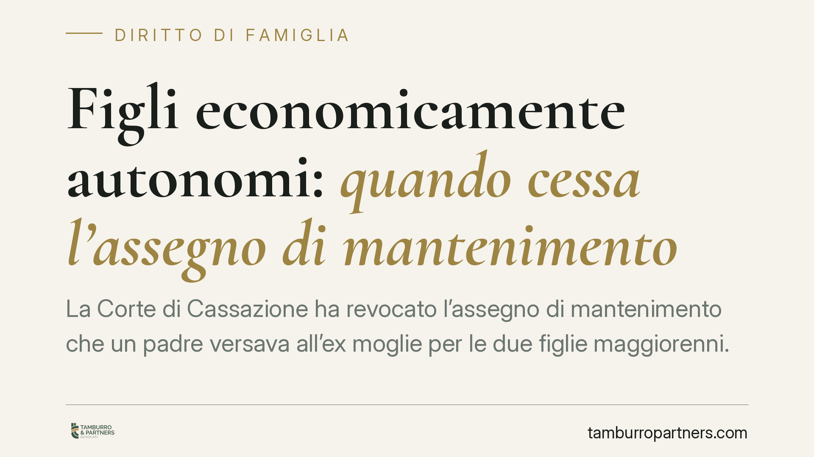

Figli economicamente autonomi: quando cessa l'assegno di mantenimento
La Corte di Cassazione ha revocato l'assegno di mantenimento che un padre versava all'ex moglie per le due figlie maggiorenni. Le figlie avevano raggiunto l'indipendenza economica e non vivevano più stabilmente con la madre, la quale non ha provato le spese sostenute. Una decisione che ribadisce i confini temporali e probatori dell'obbligo di mantenimento della prole adulta.

Il fatto
Un padre versava all'ex moglie circa cinquemila euro mensili come contributo al mantenimento delle due figlie maggiorenni. Il Tribunale di Napoli, prima, e la Corte d'Appello di Napoli, poi, avevano affrontato la richiesta di revoca. La questione è approdata in Cassazione, che ha confermato la cessazione dell'obbligo.
Due i presupposti valorizzati dai giudici: le figlie avevano raggiunto un'effettiva indipendenza economica e non risiedevano più stabilmente presso l'abitazione materna. A ciò si è aggiunto un profilo processuale decisivo: la madre non ha fornito la prova delle spese che avrebbe sostenuto per le figlie.
Inquadramento normativo
Il riferimento è l'articolo 337-septies del Codice civile. La norma prevede che il giudice possa disporre il pagamento di un assegno periodico in favore del figlio maggiorenne non economicamente autonomo. Di regola il versamento avviene direttamente al figlio; il pagamento al genitore convivente si giustifica solo finché il figlio vive stabilmente con quel genitore, che ne sostiene i costi.
Qui sta la distinzione da tenere ferma. Il profilo sostanziale riguarda l'esistenza dell'obbligo: esso si estingue quando il figlio raggiunge l'autonomia economica o quando non prova di essersi attivato per raggiungerla. Il profilo processuale riguarda invece la legittimazione a percepire: la madre poteva incassare l'assegno solo in quanto convivente con le figlie, perché era lei a sostenerne le spese. Venuta meno la convivenza stabile, viene meno anche il fondamento del versamento in suo favore.
Sull'onere della prova, l'orientamento consolidato — recepito dalle Sezioni Unite nel 2023 — grava il figlio maggiorenne (o il genitore che agisce per lui) di dimostrare la persistente mancanza di autonomia e l'impegno concreto nella ricerca di un'occupazione. L'aspettativa di autosufficienza cresce progressivamente con l'età: superata una certa soglia anagrafica, la mera prosecuzione degli studi o la ricerca del "lavoro ideale" non bastano a mantenere in vita l'obbligo.
Implicazioni pratiche
Per il genitore obbligato, la decisione conferma che l'assegno non è a tempo indeterminato. Il raggiungimento della maggiore età non estingue di per sé l'obbligo, ma sposta il baricentro: l'autonomia economica del figlio e la fine della convivenza con l'altro genitore diventano fatti idonei a chiederne la revoca.
Per il genitore che percepisce l'assegno, il punto critico è la prova. Non basta affermare di sostenere le spese: occorre documentarle. In assenza di prova, e in presenza di figli che vivono altrove e producono reddito, il versamento perde giustificazione.
Per il figlio maggiorenne, infine, l'onere di attivarsi è reale e verificabile. L'inerzia prolungata, o il rifiuto di occasioni lavorative coerenti con il percorso formativo, incide negativamente sul diritto al mantenimento.
Attenzione: la revoca non opera in automatico. Serve un provvedimento del giudice. Fino a quel momento l'obbligo resta formalmente in vigore e l'inadempimento espone a conseguenze.
Cosa fare in concreto
- Documentate la situazione reddituale dei figli. Contratti di lavoro, buste paga, dichiarazioni fiscali sono la base di ogni richiesta di revoca o di sua contestazione.
- Verificate la residenza effettiva. La convivenza stabile con il genitore percettore va accertata sui fatti, non sulla residenza anagrafica formale.
- Conservate la prova delle spese. Chi percepisce l'assegno deve poter dimostrare gli esborsi sostenuti per il figlio: pagamenti tracciabili, ricevute, contratti.
- Non sospendete i pagamenti unilateralmente. L'obbligo resta valido finché non modificato dal giudice; interromperlo di propria iniziativa espone a azioni esecutive.
- Valutate una modifica delle condizioni prima del conflitto. Consigliamo di verificare i presupposti di una revisione con un professionista, così da fondare la richiesta su elementi solidi.
---
Contributo informativo a cura di Tamburro & Partners - Avv. Giuseppe Tamburro. Non costituisce parere legale.
Ogni famiglia ha il suo equilibrio.
Separazione, divorzio, affidamento, assegno: se vuoi un confronto riservato su una specifica situazione, scrivi allo studio. Ti rispondiamo entro un giorno lavorativo.